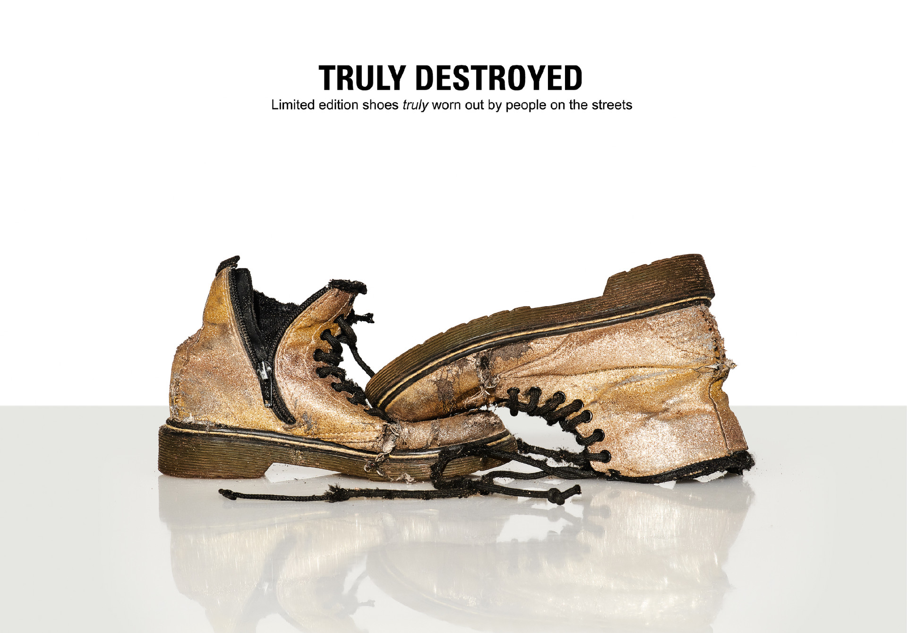
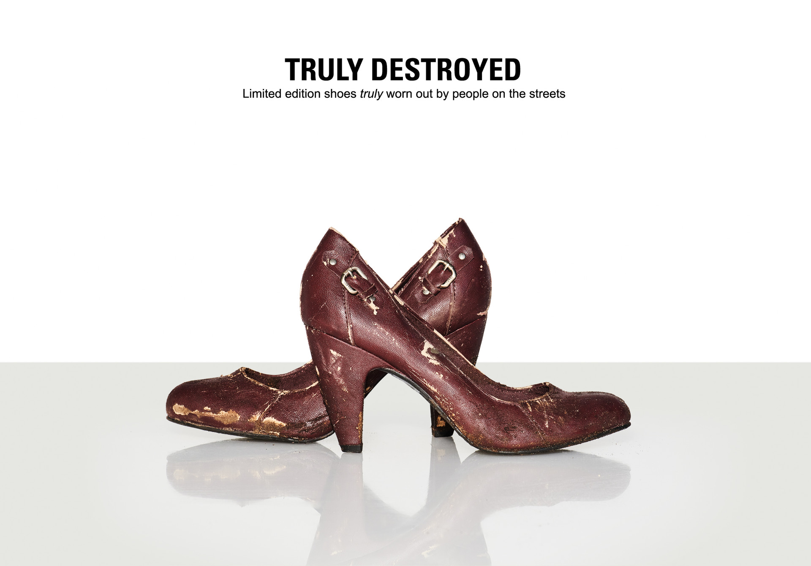
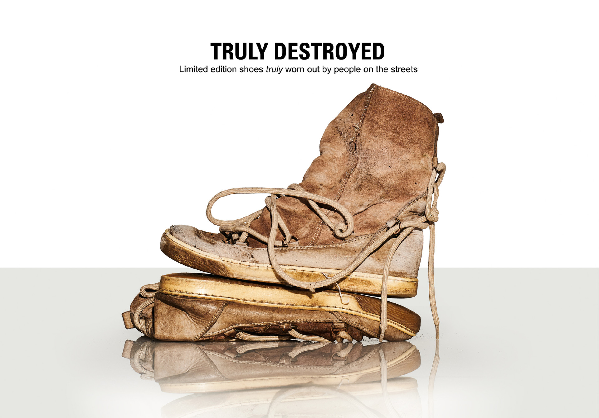
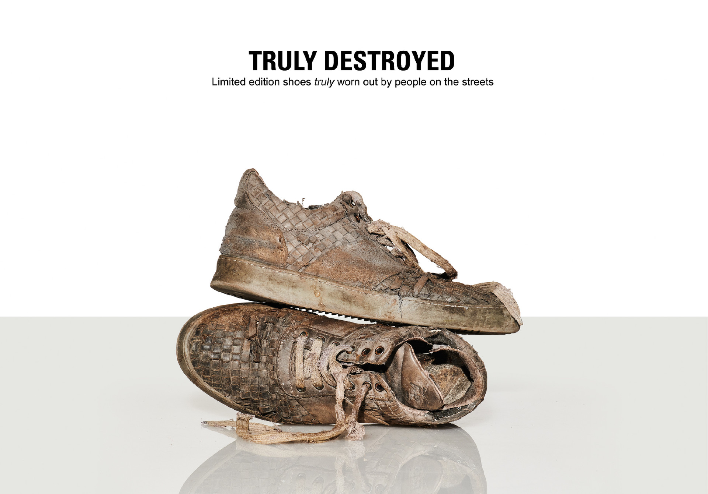
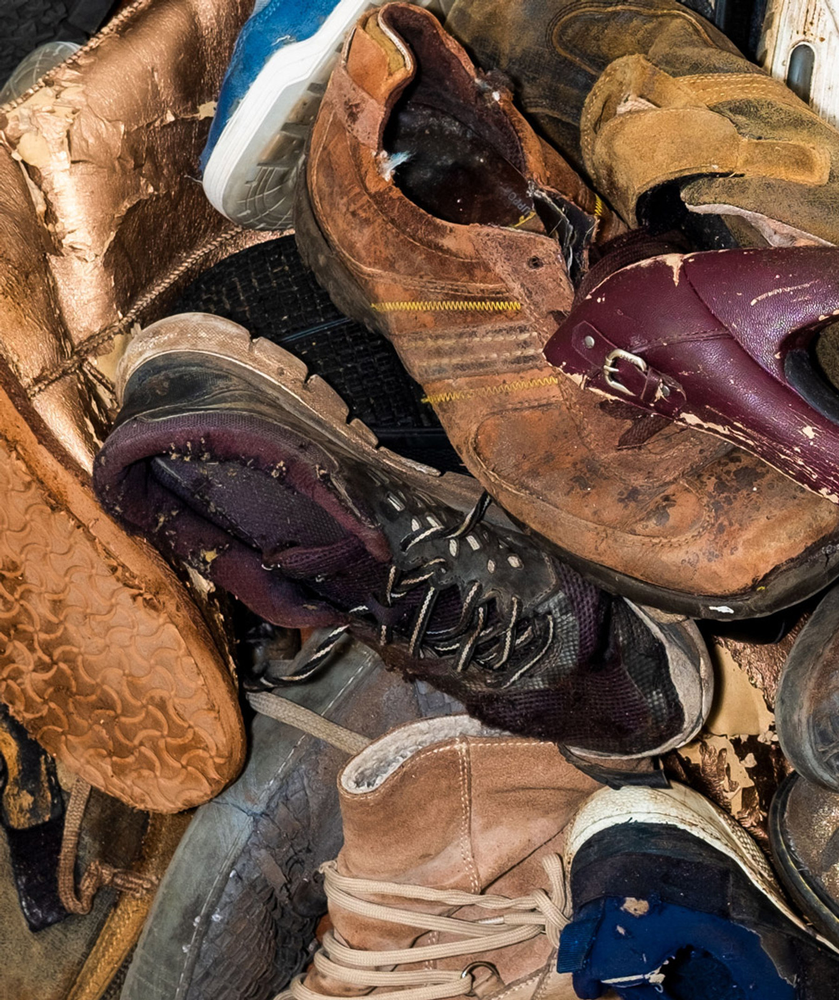
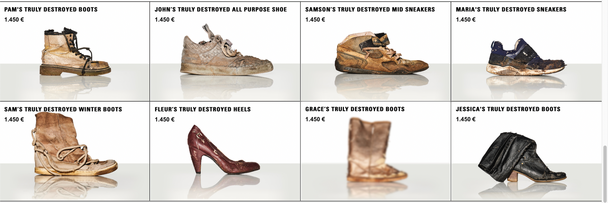
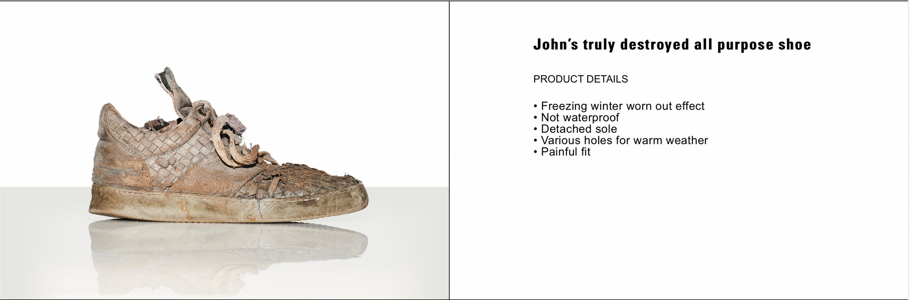
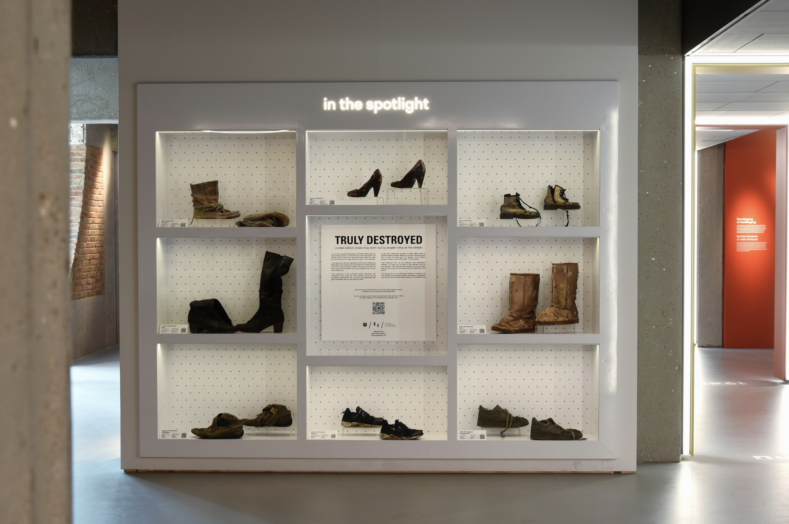

PR / DIGITAL ACTIVATION / REAL LIVE MARKETING
'TRULY DESTROYED'
The Dutch Salvation Army
'THE BIGGEST
FASHION HACK
OF THE YEAR'
When Balenciaga released a limited edition series of destroyed-looking sneakers, we decided to create our own limited edition. The only difference is that our shoes are truly destroyed, because they’ve been worn for months (in some cases years) by people living on the streets.
‘Truly Destroyed’ is a non profit project created by Cloudfactory for The Dutch Salvation Army together with fashion photographer Carli Hermès.
- Cannes Lions Awards 2023 - PR- Shortlist
- Cannes Lions Awards 2023 - PR- Shortlist
- Cannes Lions Awards 2023 - Brand Experience and Activation - Shortlist
- Merit Award 2023 One Show
- Clio Awards 2023 - Real Time Response - Silver
- Clio Awards 2023 - Use of Fashion & Beauty - Silver
- Clio Awards 2023 - Cause Related - Bronze
- The One Show 2023 - Innovation in PR - Shortlist
- The One Show 2023 - Digital & Online - Shortlist
- The One Show 2023 - Current Event Response - Shortlist
- PHNX Awards 2023 - Business Activation - Shortlist
- Eurobest Awards 2022 - Business Activation - Bronze
- Eurobest Awards 2022 PR - Shortlist
- ADCN The Dutch Creativity awards 2022 - PR - Silver
- ADCN The Dutch Creativity awards 2022 - Business and Activation - Silver




'From fashion stunt to social problem:
Salvation Army ReShare launches collection
of shoes from homeless people'




Idea/Concept: Sako Tvildiani & Nika Max Khundadze
Creative Director: Cesar Garcia & Julio Alvarez
Art Director: Ricardo Leite
Copywriter: Tristan Lenczner & Simon Carr
Agency: Cloud Factory, Amsterdam, NL.